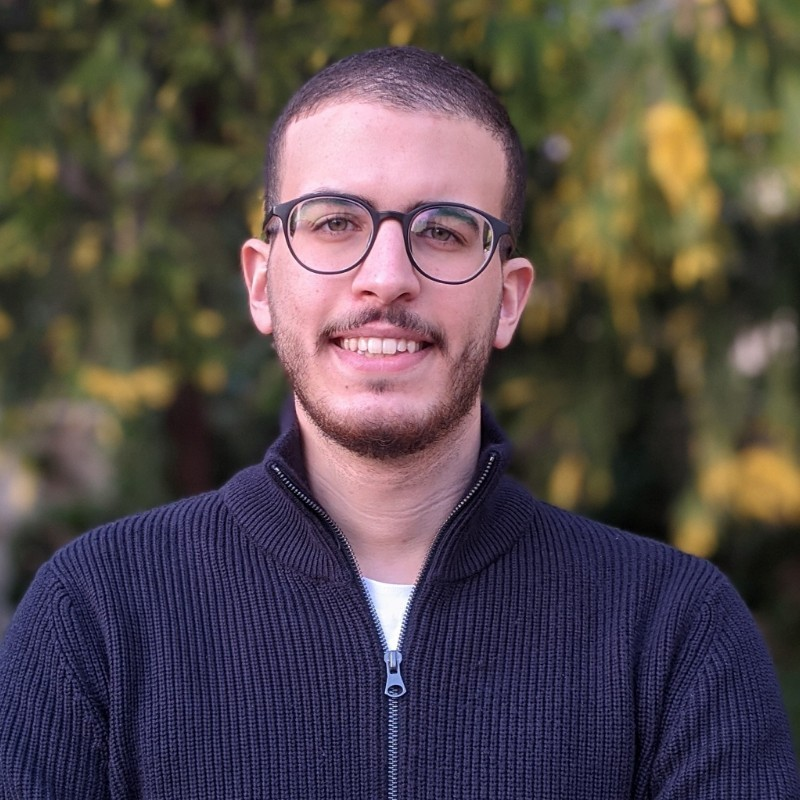

Adnan Jaljuli
|  |
Adnan Jaljuli Phone: +962 79 572 9902 |
{kind=link}
Education:
Research Interests:
Brief Bio:
I am Assistant Professor of Mechanical Engineering at Bogazici University
 as well as Visiting Researcher at Caltech
as well as Visiting Researcher at Caltech
 . I received the BSc in Civil and Mechanical Engineering (double major, top 2%)
from Sharif University of Technology
. I received the BSc in Civil and Mechanical Engineering (double major, top 2%)
from Sharif University of Technology
 in 2009 and the MSc and PhD in Mechanical Engineering from California Institute of Technology
, in 2010 and 2015, respectively. Previously I was Assistant Professor at American University
of Beirut (’19-’22) and Lecturer at Bahçeşehir University (’16-’19) and prior to that I was Postdoctoral Associate at UCLA Materials Science department (’15-’16). My research has been in developing multi-physics/chemistry methods and
materials for energy storage, conversion, transport and sustainability. Current projects include analysis and design of state-of-the-art sustainable rechargeable batteries and prediction of heterogeneous cracking behavior for membranes/clads
exposed to extreme states. Here is my Google Scholar page.
in 2009 and the MSc and PhD in Mechanical Engineering from California Institute of Technology
, in 2010 and 2015, respectively. Previously I was Assistant Professor at American University
of Beirut (’19-’22) and Lecturer at Bahçeşehir University (’16-’19) and prior to that I was Postdoctoral Associate at UCLA Materials Science department (’15-’16). My research has been in developing multi-physics/chemistry methods and
materials for energy storage, conversion, transport and sustainability. Current projects include analysis and design of state-of-the-art sustainable rechargeable batteries and prediction of heterogeneous cracking behavior for membranes/clads
exposed to extreme states. Here is my Google Scholar page.
Highlights:
-
Caltech News coverage: Building Better Batteries (Jan’17). [Link]


-
CNN Interview/featured design, SolidWorks: novel closed-loop sanitation system (May’13). [Link1] [Link2]